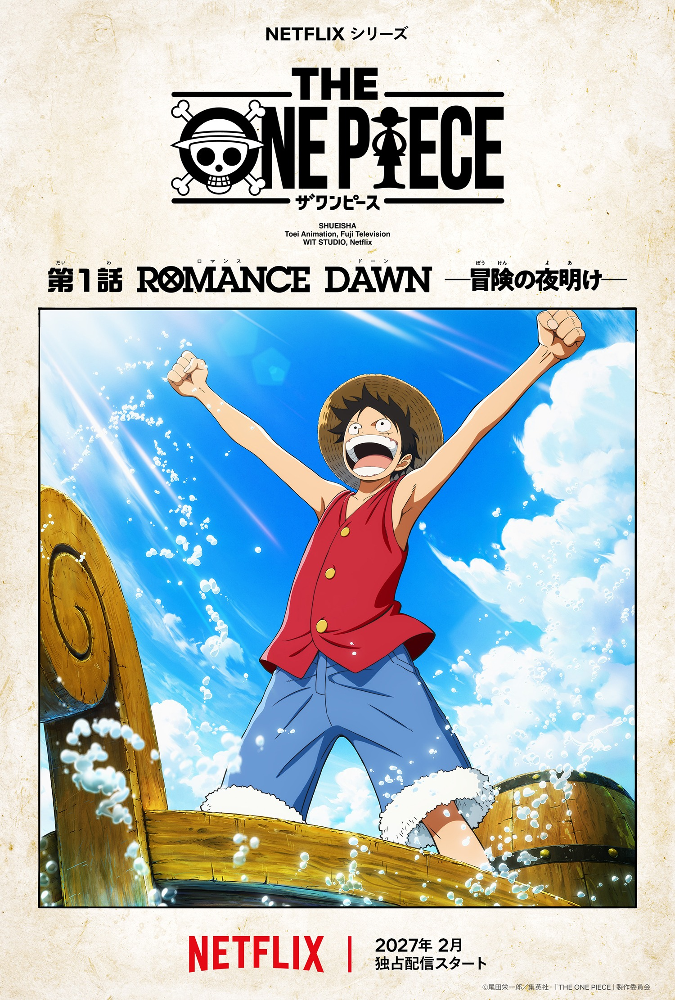

El remake "THE ONE PIECE" confirma el regreso de Mayumi Tanaka y su estreno en 2027
Mayumi Tanaka regresa como Luffy a los 71 años para el remake de WIT STUDIO que llega en febrero 2027.
Podría haber sido cualquier otra voz. Eligieron a la misma de siempre. Mayumi Tanaka, la seiyuu que ha sido Monkey D. Luffy desde 1999, confirmó su regreso al personaje para THE ONE PIECE, el remake de la historia producido por WIT STUDIO que llegará a Netflix en febrero de 2027. A sus 71 años, la actriz admitió sentir algo de ansiedad al comenzar algo nuevo, pero describió la experiencia de grabar como disfrutable una vez que encontró nuevas formas de acercarse al personaje.
El teaser abre con las últimas palabras de Gol D. Roger antes de revelar a Luffy partiendo de Foosha Village con el sombrero de paja que le dejó Shanks el Pelirrojo. El video presenta los primeros vistazo de Roronoa Zoro, Nami, Usopp y Sanji en esta nueva adaptación, cerrando con Luffy lanzando su Gum Gum Pistol contra el Señor de la Costa. El director Masashi Koizuka señaló que el equipo de animación está trabajando a plena capacidad para estar a la altura de las actuaciones de voz, y que el objetivo es que los espectadores puedan experimentar la fascinación original del manga de Oda desde el principio una vez más.

THE ONE PIECE no es una continuación ni un spin-off: es una adaptación completamente nueva que comienza desde el principio del manga original, arrancando con el arco del East Blue. La producción está separada de la serie televisiva que lleva más de 25 años en emisión, y el objetivo declarado es ofrecer una experiencia visual actualizada para el momento actual sin perder el espíritu de aventura que definió a la historia desde el principio.
La primera temporada cubrirá aproximadamente los primeros 50 capítulos del manga, siguiendo a Luffy hasta su encuentro con Sanji en el restaurante flotante Baratie. La temporada constará de siete episodios con un tiempo total de aproximadamente 300 minutos, y todos los episodios estarán disponibles de forma simultánea desde el primer día en Netflix.
Sobre THE ONE PIECE
THE ONE PIECE es una nueva adaptación al anime de la obra de Eiichiro Oda, producida por WIT STUDIO con un equipo completamente diferente al de la serie televisiva en curso. El manga original comenzó su serialización en 1997 y ha vendido más de 600 millones de copias en todo el mundo. La serie televisiva está en emisión desde 1999 y el filme ONE PIECE FILM RED de 2022 fue un fenómeno de taquilla en Japón. La serie actual continúa con el arco de Elbaph. THE ONE PIECE representa la primera vez que la historia es recontada desde el principio con una producción completamente nueva, ofreciendo tanto a fans veteranos como a nuevos espectadores una puerta de entrada actualizada a la historia de Luffy y su búsqueda del One Piece.
¿Estás listo para volver a vivir el East Blue Arc desde el principio con WIT STUDIO, o prefieres que la historia continúe donde está en lugar de un remake?